Guida Steam
Guida aggiornata al 16/12/2025.
Puoi utilizzare il menu qui a fianco per scorrere più facilmente tra le sezioni! ----->
È la guida giusta?
Questa guida è dedicata solo ed esclusivamente alla versione PC presente su Steam.
La versione "Anniversary Edition" del Microsoft Store non è supportata, almeno per il momento.
In generale, non ci riteniamo responsabili per alcun danno riscontrato durante l'installazione della traduzione, o causato da essa.
Lo sai che la traduzione è incompleta, vero?
Eh già, ed è anche quasi all'inizio!
È stato tradotto solo un capitolo su sei.
Fortunatamente sarà molto facile installare futuri aggiornamenti!
Prerequisiti#
Lista dei prerequisiti
-
Un PC con Windows 10 (o 11) a 64-bit e un account Steam
-
Una copia del gioco ottenuta legalmente su Steam: non forniremo supporto a chi non la possiede
-
Circa 25GB disponibili "anche solo temporaneamente o su chiavetta" per poter estrarre i file CPK del gioco
-
Circa 1.5GB disponibili per la traduzione in sé (pesa molto meno, ma V3UPSManager farà dei backup extra)
-
Un gestore di archivi in formato .zip/.rar/.7z, come WinRAR o 7-Zip
-
Il programma CriPakGUI
-
La versione più recente del programma V3UPSManager
-
L'ultima versione rilasciata della traduzione italiana del gioco, sotto forma di file "V3Steam.7z" (puoi scaricarla dalla pagina dedicata al gioco)
-
Da qualche minuto a qualche ora di tempo, in base alla velocità del tuo hard disk o SSD, alla tua velocità di lettura, e alla tua connessione a Internet.
Prima di iniziare#
Innanzitutto, scarica i programmi sopracitati, scaricando il file "CriPakTools_x64.zip" nel caso del programma CriPakGUI, e il file "V3UPSManager.7z" nel caso del programma V3UPSManager.
Una volta fatto, estrai il contenuto dei due archivi in due cartelle distinte, e tieni a mente dove li hai estratti, dato che dovrai utilizzare quelle due cartelle più tardi.
Se non lo hai già fatto, estrai anche il file "V3Steam.7z" che contiene le patch in formato .UPS, necessarie per installare la traduzione, in una cartella distinta dalle altre due.
(Mostra/Nascondi) Non so come estrarre i file
Chiedi a un amico o un parente, altrimenti cerca un tutorial online (è facile)
La guida sembra molto lunga e complicata, ma... non lo è affatto!
È consigliato leggere tutta la guida in modo da avere già un'idea di cosa si sta per fare.
Come trovare la cartella del gioco#
Apri Steam, accedi al tuo account se ti viene richiesto, poi seleziona "LIBRERIA" in alto a sinistra, e infine "PAGINA INIZIALE" dal menu a tendina.
Come accedere alla propria libreria su Steam
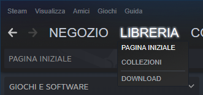
Una volta trovato "Danganronpa V3: Killing Harmony" (il nome del gioco) sulla sinistra, selezionalo cliccandoci sopra.
Ovviamente, se non hai ancora installato il gioco, installalo scegliendo la lingua inglese tra quelle proposte (è necessario scegliere la lingua inglese).
Sulla destra, troverai un pulsante con l'icona di un ingranaggio: clicca quell'icona, poi seleziona "Gestisci" e successivamente "Sfoglia i file locali".
Come trovare e aprire la cartella del gioco
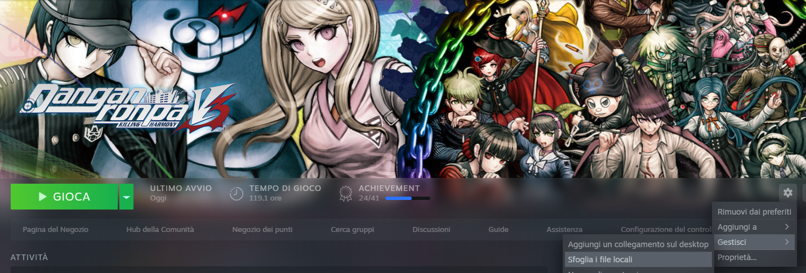
Quella cartella contiene i file del gioco, ed è la "cartella di installazione" (tienilo a mente).
(Non preoccuparti se le date di modifica dei tuoi file sono diverse da quelle nello screenshot sottostante).
Ecco i file e le cartelle!
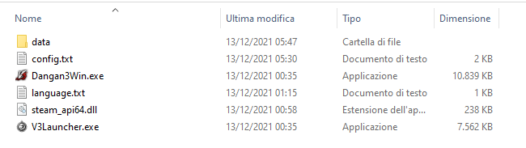
Estrarre i file .CPK#
Passaggio già svolto?
Se desideri installare un aggiornamento della traduzione, dopo averla già installata, puoi saltare questo passaggio e dirigerti alla prossima sezione (installare la traduzione).
Assicurati comunque di utilizzare l'ultima versione di V3UPSManager, per cortesia.
Se hai verificato l'integrità dei file da Steam (oppure hai disinstallato e reinstallato il gioco) dopo aver già seguito questa sezione, probabilmente dovrai rifare questi passaggi. Mi dispiace.
È la sezione più complicata, ma serve solo durante la prima installazione!
Dalla cartella di installazione del gioco, entra nella sottocartella "data".
La sottocartella 'data'
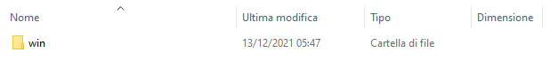
Entra, dunque, nella sottocartella "win".
La sottocartella 'win'
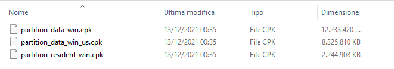
All'interno della sottocartella "win" troverai dei file .CPK, che dovrai estrarre utilizzando il programma CriPakGUI (essenzialmente una nuova versione con GUI di CriPakTools) o un programma a tuo piacimento in grado di estrarre i file .CPK.
Dunque, apri il programma CriPakGUI.exe, che hai estratto in una cartella a tuo piacere prima di iniziare.
Il programma CriPakGUI
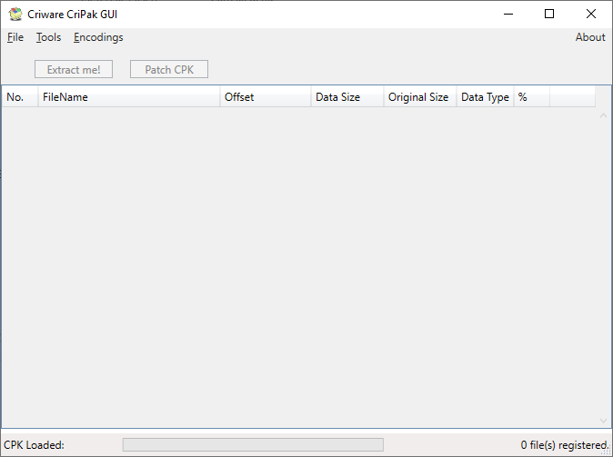
Seleziona "File", in alto a sinistra, poi "Open CPK" dal menu a tendina.
Il menu di 'File'
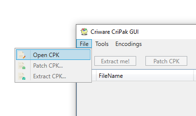
Nella schermata che si aprirà, naviga fino alla cartella di installazione del gioco.
(Mostra/Nascondi) Un piccolo suggerimento
Puoi anche copiare e incollare l'indirizzo!
Clicca sulla barra degli indirizzi in alto col tasto destro del mouse e seleziona "Copia indirizzo".
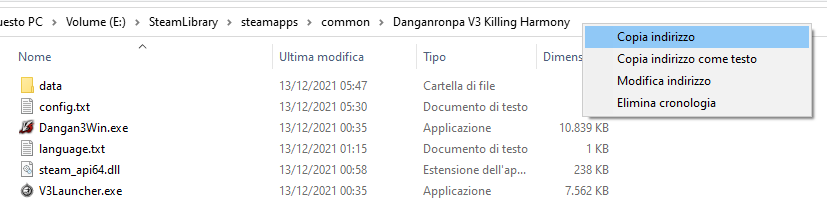
Riapri la finestra di selezione file di CriPakGUI, poi clicca sulla barra degli indirizzi di quella finestra con il tasto sinistro del mouse.
A seguire, clicca nello stesso punto con il tasto destro del mouse, e seleziona "Incolla".
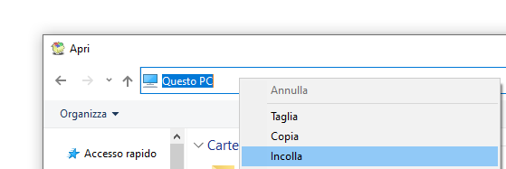
Una volta fatto, premi "Invio" (o "Enter") sulla tastiera.
Dentro la cartella del gioco
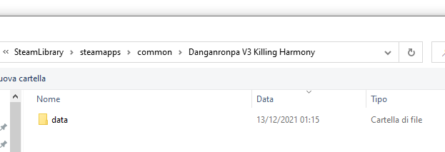
Ma è normale?
Si dovrebbe essere aperta la cartella di installazione del gioco, ma sembra che ci sia solamente la cartella "data".
Che fine hanno fatto gli altri file?
Non devi preoccuparti, dato che, semplicemente, al programma "interessano" solamente le cartelle e i file .CPK.
Non essendoci file .CPK nella cartella d'installazione, viene mostrata solamente la cartella 'data'.
Entra nella sottocartella "data", e poi nella sottocartella "win".
Dentro la sottocartella 'win'
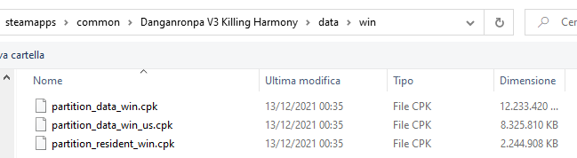
Come potrai notare, ci saranno tre file .CPK, e dovrai estrarli tutti e tre.
"Abituati" a questi prossimi passaggi, perché dovrai rifarli!
Per cominciare, seleziona partition_data_win.cpk e premi "Invio" (o "Enter") sulla tastiera per aprirlo in CriPakGUI.
In realtà potresti partire da qualunque dei tre, ma più sono grossi e più lenti sono da estrarre... almeno in teoria.
(Mostra/Nascondi) Cosa contiene il file .CPK?
Una volta caricato il file in CriPakGUI, apparirà questa schermata, che mostra una lista di file all'interno del file .CPK selezionato, assieme a varie informazioni:
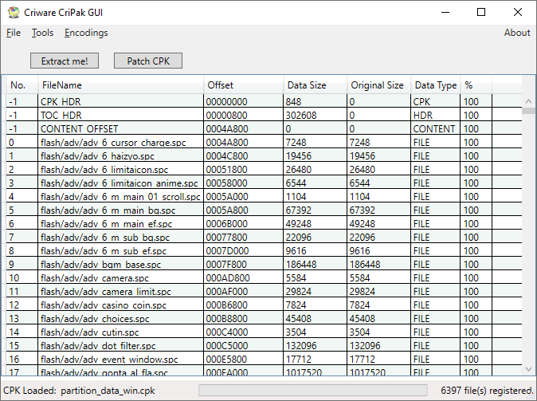
Seleziona "Extract me!" in alto a sinistra.
(Mostra/Nascondi) ...Cosa dovevo selezionare?
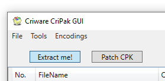
Nella schermata che si aprirà, seleziona semplicemente "Selezione cartella" per estrarlo nella stessa cartella da cui proviene.
Seleziona la cartella
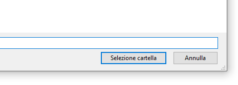
Perché non fare una pausa, forse breve o forse luuuuunga? Ti farà sapere quando avrà finito tramite una "notifica" nella forma di un "prompt" che apparirà a schermo.
Il prompt
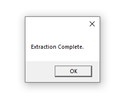
Clicca su "OK", poi ripeti il processo di estrazione per gli altri file .CPK, come già accennato.
(Mostra/Nascondi) Ehm... Qual è che ho appena estratto?
Puoi trovare il file attualmente caricato su CriPakGUI nell'angolo in basso a sinistra.
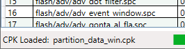
Una volta estratti tutti e tre i file .CPK, potrai chiudere CriPakGUI. Non c'è bisogno di spiegare anche come si chiude, vero?
Una volta chiuso il programma, dirigiti alla cartella "win", situata dentro "data".
(Mostra/Nascondi) Non so più da che parte girarmi
È la stessa cartella che contiene i file .CPK, non è difficile da trovare.
La cartella 'win' per l'ennesima volta
Come puoi notare, ci sono tre nuove cartelle, con cui avrai a che fare tra poco.
Per prima cosa, però, dovrai spostare i file .CPK da una cartella a un'altra.
Non importa quale sia, l'unico requisito è che non siano in "win".
Puoi anche spostarli comodamente in "data": ti basterà selezionare i file e trascinarli col mouse su "data" nella barra degli indirizzi.
Se preferisci, puoi anche eliminarli, una volta estratti: pesano un bel po' (circa 25GB).
Se ci ripensi, potrai sempre installarli di nuovo tramite Steam, ma dovrai ripetere i passaggi precedenti.
L'importante è che rimangano solamente le cartelle.
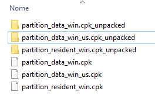 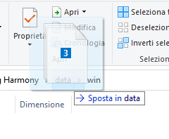 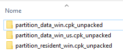
Ora rimarranno solamente le tre cartelle.
Anche questa volta dovrai ripetere dei passaggi, una volta per ogni cartella, ma si tratta di una cosa molto semplice.
Entrando in quelle cartelle, potrai notare che celano delle altre sottocartelle.
Le sottocartelle (esempio)
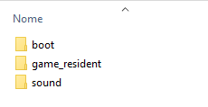
Semplicemente, selezionale tutte con il mouse e trascinale su "win".
Spostare con il mouse
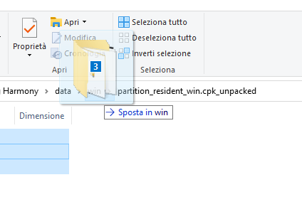
Ripeti gli ultimi passaggi con le altre cartelle.
Una volta ripetuto questo processo per le altre due cartelle, puoi eliminare le cartelle con "cpk_unpacked" nel nome.
(Mostra/Nascondi) Non so come si eliminano file e cartelle
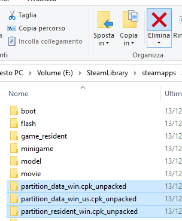 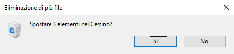
Adesso dovrebbero essere rimaste solamente queste cartelle:
Le 12 cartelle rimaste
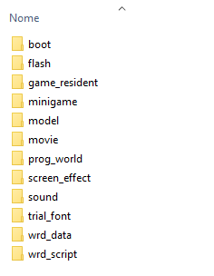
Se è così: ottimo! Puoi finalmente installare la traduzione italiana!
Congratulazioni, hai ottenuto il titolo di 'Super Paziente Liceale'! (Questa era pessima)
Installare (o aggiornare) la traduzione#
Entra nella cartella dove hai estratto V3UPSManager (Ti ricordi? Lo hai fatto all'inizio), e apri V3UPSManager.exe.
(Nota: la GUI del programma potrebbe essere diversa rispetto agli screenshot a causa del fatto che viene aggiornato tutt'ora)
V3UPSManager

Clicca su "Seleziona cartella di installazione".
(Mostra/Nascondi) Non trovo 'seleziona cartella di installazione'
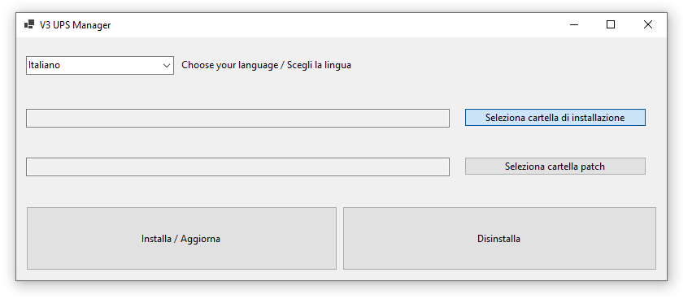
Nella schermata che si aprirà, seleziona la cartella di installazione del gioco.
Come prima, puoi anche copiare ed incollare l'indirizzo dalla barra degli indirizzi.
Una volta fatto, seleziona "Selezione cartella".
Seleziona l'effettiva cartella di installazione
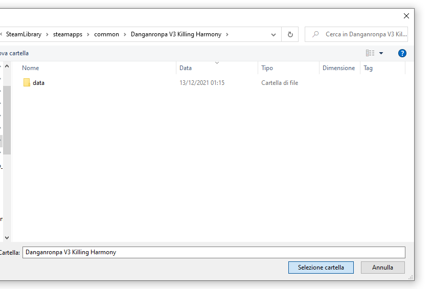
Se nulla è andato storto, dovrebbe apparire questo prompt:
Il prompt di V3UPSManager
Clicca su "OK", e passiamo alle patch.

Stavolta clicca su "Seleziona cartella patch".
(Mostra/Nascondi) Non trovo 'seleziona cartella patch'
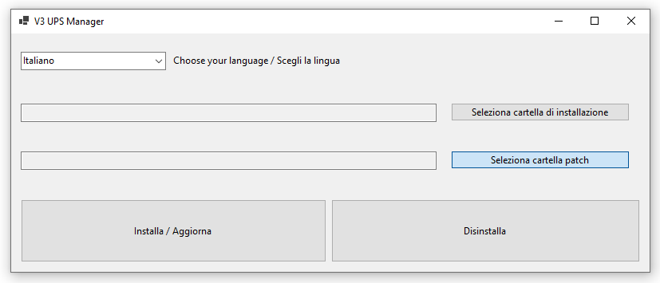
Che cartella devo selezionare?
Scegli la cartella "PC" (entrandoci dentro o selezionandola), che si trova dove hai estratto il file V3Steam.7z della traduzione all'inizio.
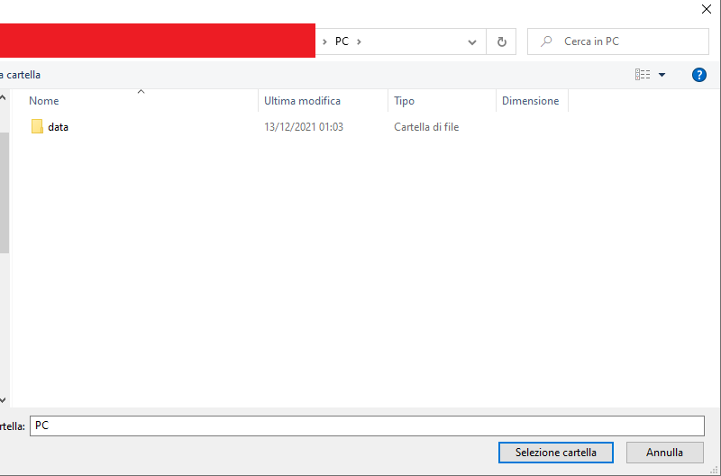
Se nulla è andato storto, apparirà un altro prompt.
Il secondo prompt di V3UPSManager
Clicca su "OK".
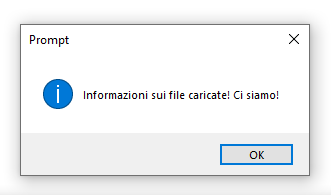
Come effettivamente installare (o aggiornare) la traduzione
Una volta fatto, clicca su "Installa / Aggiorna".
Se mai volessi disinstallare la traduzione, invece, dovresti selezionare "Disinstalla" (intuitivo, no?)
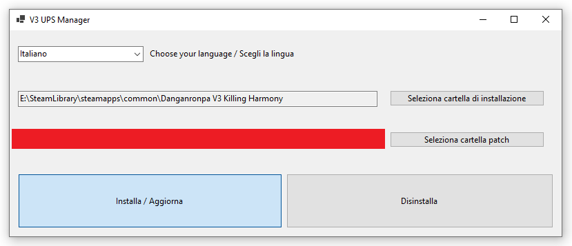
Per l'ultima volta, se nulla è andato storto, apparirà un prompt.
L'ultimo prompt di V3UPSManager
Clicca su "OK".
Ora potrai chiudere V3UPSManager e, finalmente, giocare al gioco* in italiano!
*la parte tradotta nel momento in cui installi la traduzione italiana, e l'ultima versione rilasciata arriva alla fine del capitolo 1.
Buon divertimento!